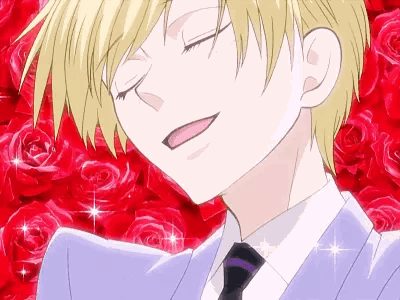

Ouran High School Host Club 🌹 ♡ˎˊ˗
Ouran High School Host Club is mijn favoriete anime. Ik hou er eigenlijk teveel van. Het is een romantische komedie-anime over Haruhi, een beursstudent op een eliteschool, die per ongeluk een dure vaas breekt en haar schuld moet afbetalen door te werken voor een club van knappe jongens die vrouwelijke studenten vermaken. Terwijl Haruhi zich voordoet als jongen, ontstaan er grappige en soms emotionele situaties rond vriendschap, identiteit en liefde.


.gif)
.gif)
.gif)
.gif)
MIjn favoriete personages
Ik heb eigenlijk 3 favoriete personages. Ik hou echt te veel van hun allemaal maar deze drie hebben een speciale plek in mijn hart.
- Kyoya
Kyoya is echt mijn meest favoriete personage in deze hele serie. Hij is de slimme en berekenende “schaduwleider” van de Host Club. Hij is koel, rationeel en denkt altijd strategisch vaak bezig met financiën, planning en het imago van de club. Hoewel hij soms afstandelijk of manipulatief kan overkomen, heeft hij een verborgen zorgzame kant en is hij loyaal aan zijn vrienden.